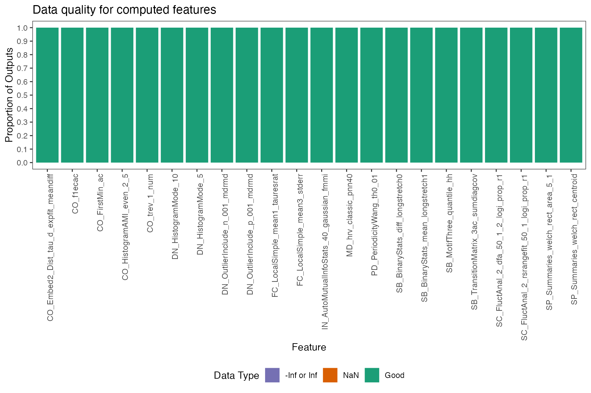
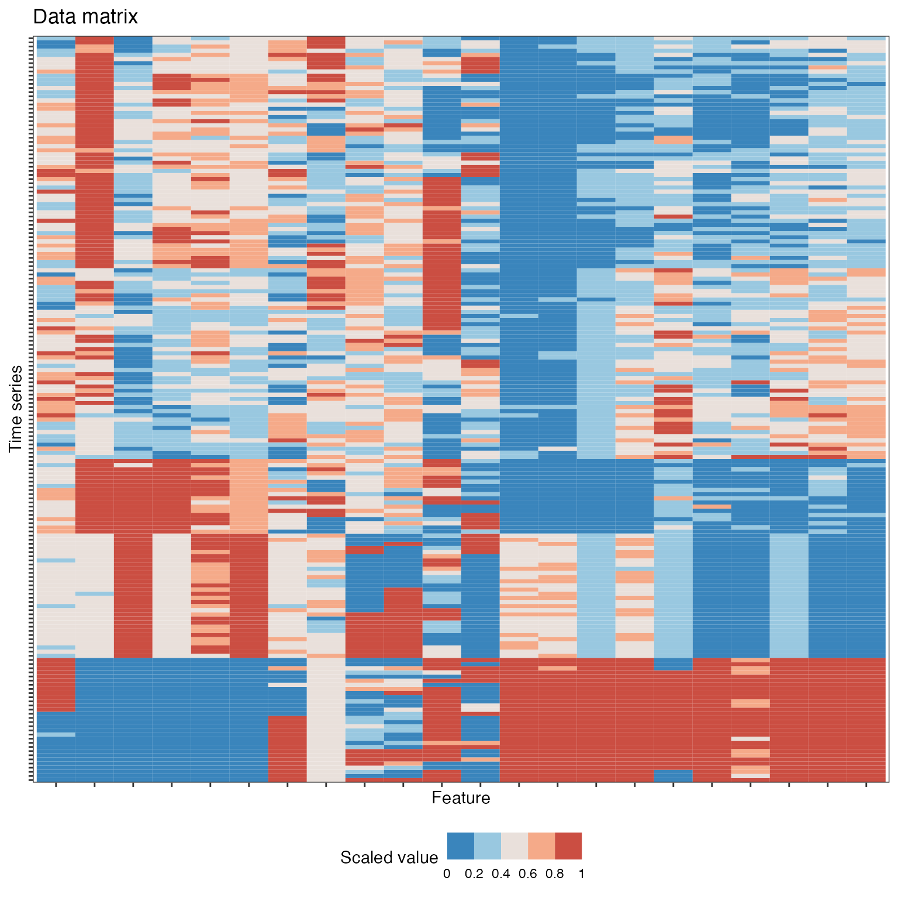
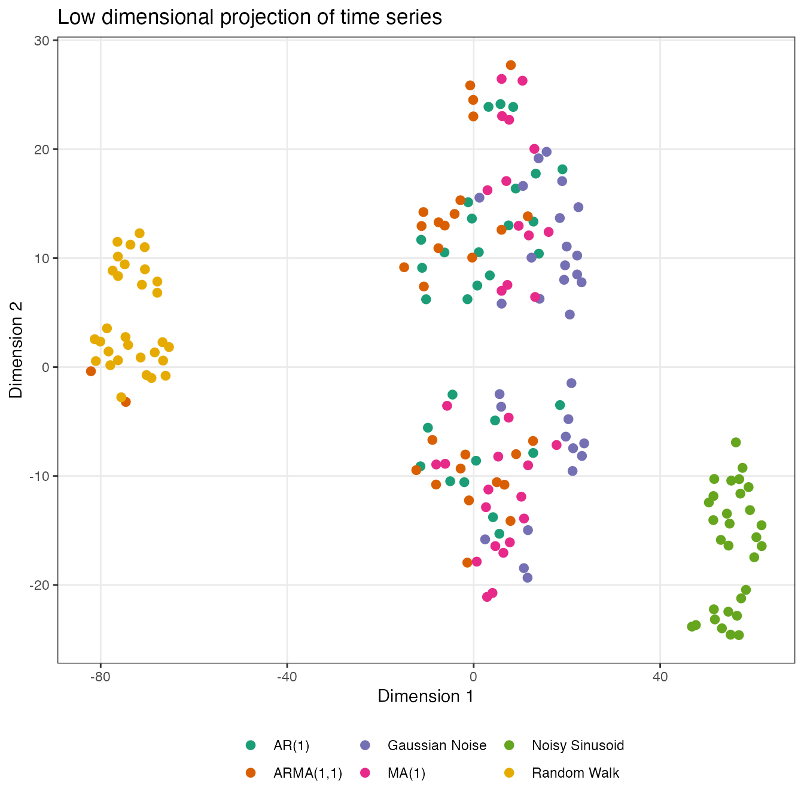
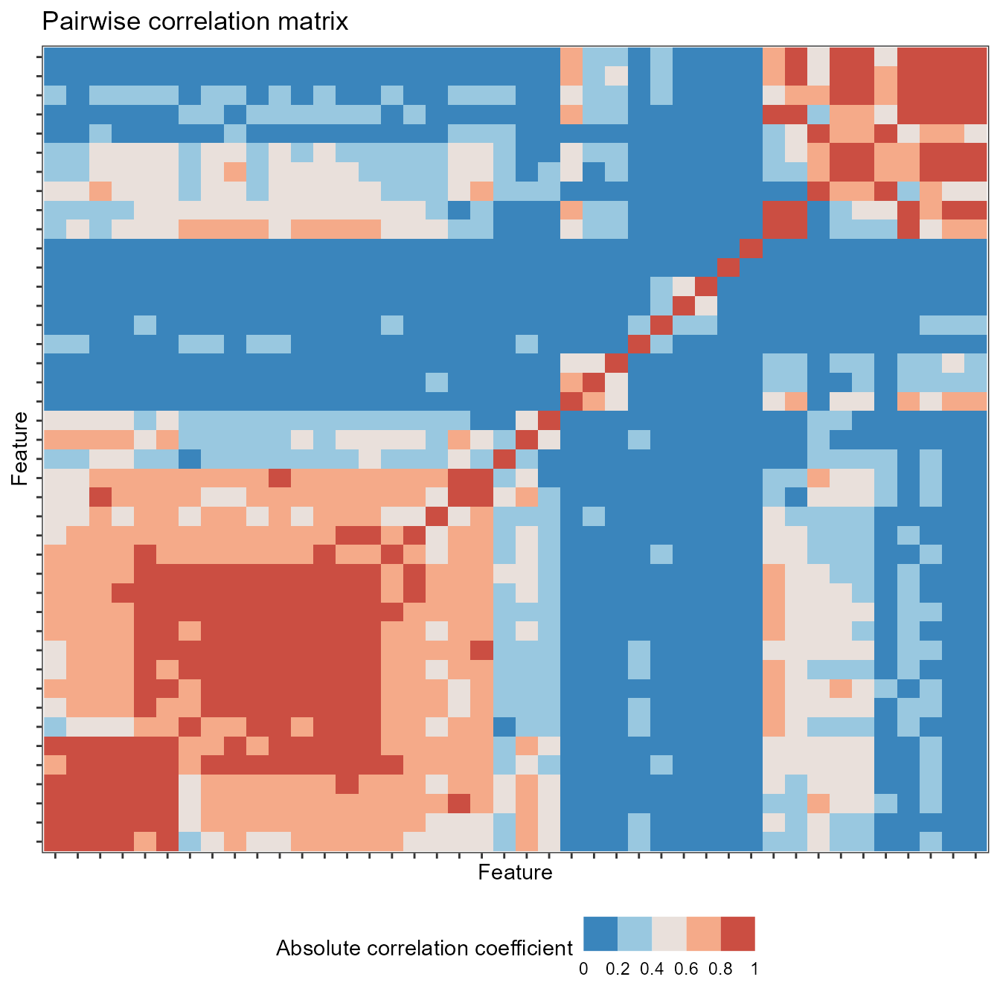
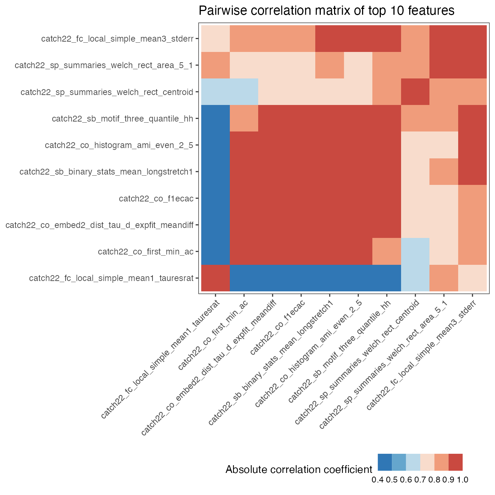
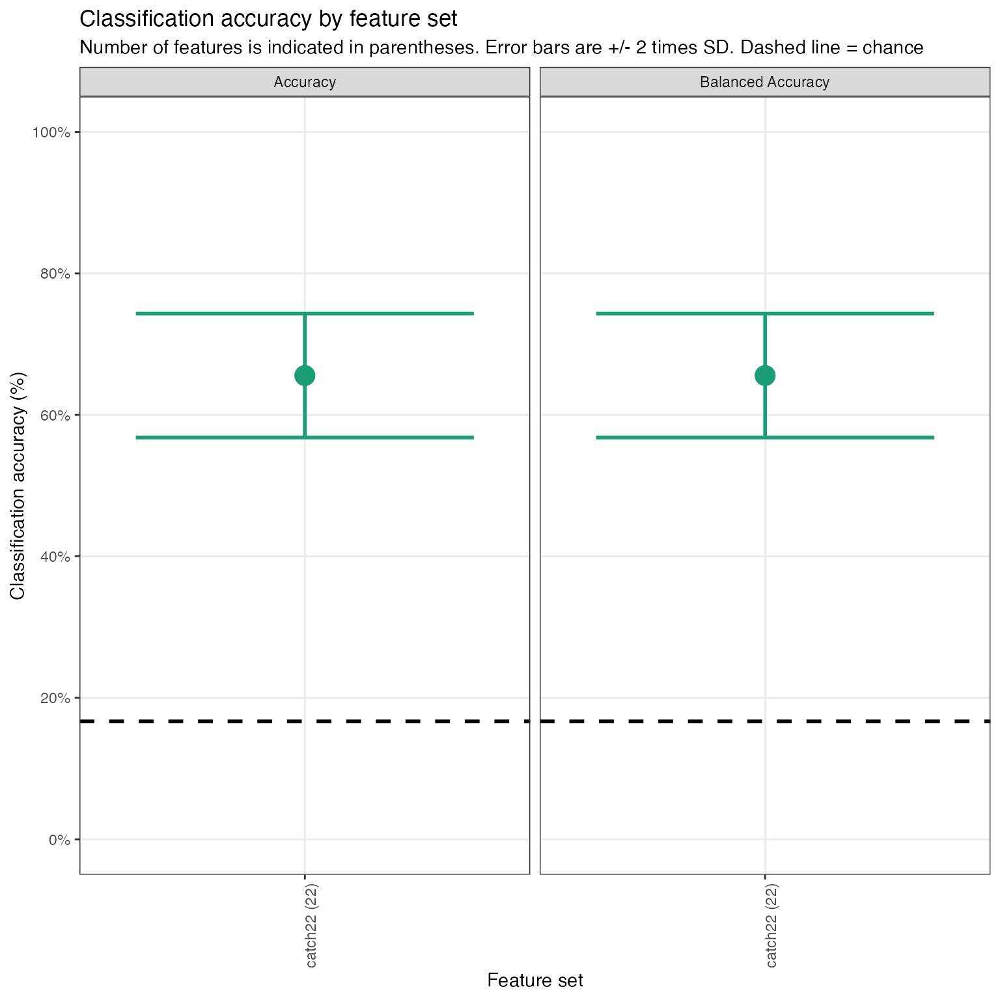
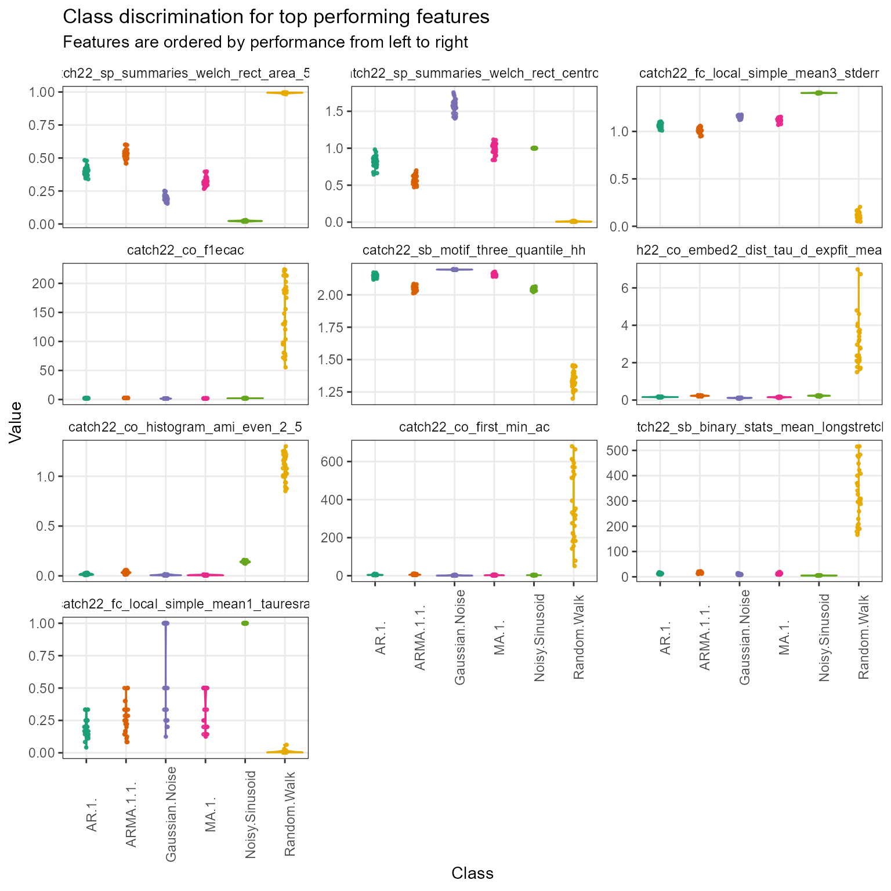
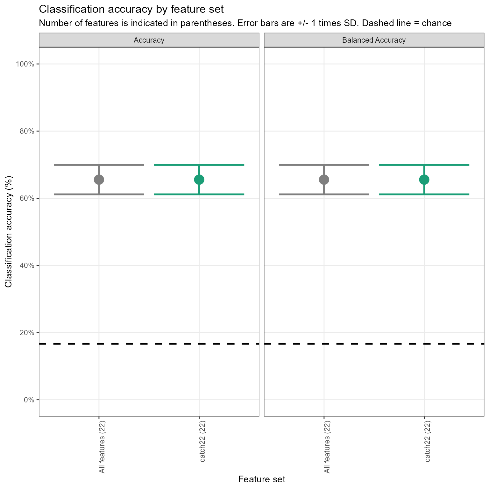

Purpose
theft facilitates user-friendly access to a structured
analytical workflow for the extraction, analysis, and visualisation of
time-series features. This structured workflow is presented in the
graphic below (note that theft has many more functions than
displayed in this graphic—keep reading for more):

Core calculation functions
To explore package functionality, we are going to use a dataset that
comes standard with theft called simData. This
dataset contains a collection of randomly generated time series for six
different types of processes. The dataset can be accessed via:
theft::simDataThe data follows the following structure:
head(simData)
#> values timepoint id process
#> Gaussian Noise.1 -0.6264538 1 Gaussian Noise_1 Gaussian Noise
#> Gaussian Noise.2 0.1836433 2 Gaussian Noise_1 Gaussian Noise
#> Gaussian Noise.3 -0.8356286 3 Gaussian Noise_1 Gaussian Noise
#> Gaussian Noise.4 1.5952808 4 Gaussian Noise_1 Gaussian Noise
#> Gaussian Noise.5 0.3295078 5 Gaussian Noise_1 Gaussian Noise
#> Gaussian Noise.6 -0.8204684 6 Gaussian Noise_1 Gaussian NoiseCalculating feature summary statistics
The core function that automates the calculation of the feature
statistics at once is calculate_features. You can choose
which subset of features to calculate with the feature_set
argument. The choices are currently "catch22",
"feasts", "Kats", "tsfeatures",
"tsfresh", and/or "TSFEL".
Note that Kats, tsfresh and
TSFEL are Python packages. The R package
reticulate is used to call Python code that uses these
packages and applies it within the broader tidy data philosophy
embodied by theft. At present, depending on the input
time-series, theft provides access to \(>1200\) features.
Installing Python feature sets
Prior to using theft (only if you want to use the
Kats, tsfresh or TSFEL feature
sets; the R-based sets will run fine) you should have a working Python
3.9 installation and run the function
install_python_pkgs(python_path, path) after first
installing theft, where the python_path
argument is the filepath to the location of Python 3.9 on your machine
and the path argument is the location you wish to install
the Python libraries and virtual environment to on your machine.
For example, if you wanted to install the Python libraries and the
resulting virtual environment in
"C:/Users/User/Desktop/theft" and Python 3.9 is located at
"/usr/bin/python" on your machine, you would run the
following after first having installed theft:
install_python_pkgs("C:/Users/User/Desktop/theft", "/usr/bin/python")If you want to use any of the Python-based packages, you must first
tell R which Python and/or virtual environment on your computer contains
the installed libraries. This can be done in theft via the
init_theft function, which has two arguments:
-
python_path– the filepath to the version of Python you wish to use (i.e., the same as was entered intoinstall_python_pkgsif you ran that first) -
venv_path– the filepath to the Python virtual environment wheretsfresh,TSFEL, and/orKatsare installed (i.e., the path returned in the console message frominstall_python_pkgsif you ran that function first)
However, you do not necessarily have to use this convenience
function. If you have another method for pointing R to the correct
Python (such as reticulate or findpython), you
can use those in your workflow instead.
NOTE: You only need to call init_theft
or your other solution once per session.
Calculating features
You are then ready to use the rest of the package’s functionality,
beginning with the extraction of time-series features. Here is an
example with the catch22 set:
feature_matrix <- calculate_features(data = simData,
id_var = "id",
time_var = "timepoint",
values_var = "values",
group_var = "process",
feature_set = "catch22",
seed = 123)Note that for the catch22 set you can set the additional
catch24 argument to calculate the mean and standard
deviation in addition to the standard 22 features:
feature_matrix <- calculate_features(data = simData,
id_var = "id",
time_var = "timepoint",
values_var = "values",
group_var = "process",
feature_set = "catch22",
catch24 = TRUE,
seed = 123)A tidy dataframe of most of the included features and the
set they correspond to is available in the dataframe
feature_list:
head(feature_list)
#> feature_set feature
#> 1 catch22 DN_HistogramMode_5
#> 2 catch22 DN_HistogramMode_10
#> 3 catch22 CO_f1ecac
#> 4 catch22 CO_FirstMin_ac
#> 5 catch22 CO_HistogramAMI_even_2_5
#> 6 catch22 CO_trev_1_numNOTE: If using the tsfresh feature set, you might want
to consider the tsfresh_cleanup argument to
calculate_features. This argument defaults to
FALSE and specifies whether to use the in-built
tsfresh relevant feature filter or not.
Comparison of feature sets
For a detailed comparison of the six feature sets, see this paper for a detailed review1.
Data quality checks
The calculate_features function returns an object of
class feature_calculations. Objects of this type are
purposefully looked-for by other functions in theft.
Because it is a class, simple methods such as plot() can be
called on the object to produce a range of statistical graphics. The
first is a visualisation of the data types of the calculated feature
vectors. This is useful for inspecting which features might need to be
dropped due to large proportions of undesirable (e.g., NA,
NaN etc.) values. We can specify the plot
type = "quality to make this graphic:
plot(feature_matrix, type = "quality")
Normalising/scaling functions
Putting calculated feature vectors on an equal scale is crucial for
any statistical or machine learning model as variables with high
variance can adversely impact the model’s capacity to fit the data
appropriately, learn appropriate weight values, or minimise a loss
function. theft includes function normalise to
rescale either the whole feature_calculations object, or a
single vector of values (e.g. values for all participants on just the
SB_BinaryStats_mean_longstretch1 feature). Four
normalisation methods are offered:
- z-score –
"z-score" - Sigmoid –
"Sigmoid" - Outlier-robust Sigmoid (credit to Ben Fulcher for creating the
original MATLAB
version) -
"RobustSigmoid" - Min-max –
"MinMax"
Normalisation on the whole feature_calculations object
can be performed in one line:
normed <- normalise(feature_matrix, norm_method = "z-score", unit_int = FALSE)For single vector normalisation, all you need to do is pass in a
vector as normalise checks for object classes. If you wish
to rescale values into the unit interval \([0,1]\) after applying the selected
normalisation method, you can set unit_int = TRUE.
Data visualisation and low-dimensional projections
The package also comes with additional statistical and graphical functionality:
- Feature by time-series matrix as a heatmap
- Low dimensional projections of the feature space and plotting as a scatterplot
- Pairwise feature correlation matrix as a heatmap
Feature matrices
The function calling type = "matrix" in
plot() on a feature_calculations object takes
itand produces a ggplot object heatmap showing the feature
vectors across the x axis and each time series down the
y axis. Prior to plotting, the function hierarchically
clusters the data across both rows and columns to visually highlight the
empirical structure. Note that you have several options for the
hierarchical clustering linkage algorithm to use:
-
"average"(default) "ward.D""ward.D2""single""complete""mcquitty""median""centroid"
See the hclust
documentation for more information.
Note that the legend for this plot (and other matrix visualisations
in theft) have been discretised for visual clarity as
continuous legends can be difficult to interpret meaningful value
differences easily.
plot(feature_matrix, type = "matrix", norm_method = "RobustSigmoid")
You can control the normalisation type with the
norm_method argument, whether to rescale to the unit
interval after normalisation with the unit_int argument,
and the hierarchical clustering method with the
clust_method argument (the example above used defaults so
manual specification was not needed).
Individual feature distributions
Plotting the entire feature matrix is useful, but sometimes we wish
to understand the distributions of individual features. This is
particularly useful if there are different groups in your data (such as
in a time-series classification context). We can again use the
plot() generic here to draw violin plots through setting
type = "violin". Note that for violin plots, we also need
to tell the function which features we wish to plot (i.e., a vector of
characters specifying feature names from the names column
in your feature_calculations object). For simplicity, we
will just plot two random features from catch22 here:

Note that when using these defined plot() generics, you
can pass any additional arguments to certain geoms to control the plot
look through the ... argument in the plot()
function. Below is a guide to where these arguments go depending on the
plot type:
-
type = "quality"—...goes toggplot2::geom_bar -
type = "matrix"—...goes toggplot2::geom_raster -
type = "cor"—...goes toggplot2::geom_raster -
type = "violin"—...goes toggplot2::geom_point
For example, we may wish to control the point size and transparency in the above plot (not rendered here for space):
Low dimensional projections
The function reduce_dims takes the
feature_calculations object and calculates either a
principal components analysis (PCA) or t-distributed stochastic
neighbour embedding (t-SNE) fit on it. This result is stored in
a custom object class called low_dimension:
low_dim <- reduce_dims(feature_matrix,
norm_method = "RobustSigmoid",
unit_int = TRUE,
low_dim_method = "PCA",
seed = 123)We can similarly call plot() on this object to produce a
two-dimensional scatterplot of the results:
plot(low_dim)
Alternatively, a t-SNE version can be specified in a similar
fashion, with the perplexity hyperparameter able to be
controlled by the user. Typical values for this range between 5 and 50,
depending on the size of the data. At lower levels of
perplexity, local variations tend to dominate, while at
very high levels of perplexity, results can be
uninterpretable as clusters can merge. See this interactive
article for a detailed review. Shaded covariance ellipses can also
be disabled when plotting low_dimension objects by setting
show_covariance = FALSE:
low_dim2 <- reduce_dims(feature_matrix,
norm_method = "RobustSigmoid",
unit_int = TRUE,
low_dim_method = "t-SNE",
perplexity = 10,
seed = 123)
plot(low_dim2, show_covariance = FALSE)
There is also the option to specify any other arguments to
reduce_dims that are then passed to either
stats::prcomp or Rtsne::Rtsne through the
ellipsis additional arguments. For example, you may wish to control the
maximum number of iterations (max_iter) and the
speed-accuracy trade-off (theta) in
Rtsne::Rtsne:
low_dim3 <- reduce_dims(feature_matrix,
norm_method = "RobustSigmoid",
unit_int = TRUE,
low_dim_method = "t-SNE",
perplexity = 10,
seed = 123,
max_iter = 5000,
theta = 0.2)You can consult the documentation to get a list of potential
arguments by calling either ?prcomp or
?Rtsne.
Pairwise correlations
You can plot correlations between feature vectors using
plot(type = "cor") on a feature_calculations
object:
plot(feature_matrix, type = "cor")
Similarly, you can control the normalisation type with the
norm_method argument and the hierarchical clustering method
with the clust_method argument (the example above used
defaults so manual specification was not needed).
Time-series classification
Feature-by-feature
Since feature-based time-series analysis has shown particular promise
for classification problems, theft includes functionality
for exploring group separation. The function
tsfeature_classifier enables you to fit a range of
classification models to enable statistical comparisons using the
resampling methodology presented in this
paper for a detailed review2. This function is meant to serve as a fast
answer that can be used to guide analysis and not a replacement for the
development of a careful statistical pipeline.
tsfeature_classifier has the following arguments:
-
data—feature_calculationsobject containing the raw feature matrix produced bycalculate_featureswith an includedgroupcolumn as pertheft::calculate_features -
classifier—functionspecifying the classifier to fit. Should be a function with 2 arguments:formulaanddata. Please note thattsfeature_classifierz-scores data prior to modelling using the train set’s information so disabling default scaling if your function uses it is recommended. Defaults toNULLwhich means the following linear SVM is fit:classifier = function(formula, data){mod <- e1071::svm(formula, data = data, kernel = "linear", scale = FALSE, probability = TRUE)} -
train_size—Numeric value denoting the proportion of samples to use in the training set. Defaults to0.75 -
n_resamples—Integer denoting the number of resamples to calculate. Defaults to30 -
by_set—Boolean specifying whether to compute classifiers for each feature set. Defaults toTRUE(see below section “Multi-feature” for more on this). IfFALSE, the function will instead find the best individually-performing features -
use_null—Boolean whether to fit null models where class labels are shuffled in order to generate a null distribution that can be compared to performance on correct class labels. Defaults toFALSE. This is known as permutation testing -
seed—Integer to fix R’s random number generator to ensure reproducibility. Defaults to123 -
preference— Character denoting which feature set to keep (meaning the others will be filtered out) between"feasts","tsfeatures", and"Kats"since there is considerable overlap between these three sets. Defaults to"feasts". Duplicates will not be removed from the respective non-preferenced sets when computing set-level results to ensure fairness. They are only filtered out for either the construction of the set of “All features” ifby_set = TRUEand when computing individual feature results (to reduce redundant calculations)
NOTE: You can apply duplicate filtering to any
feature_calculations object through the function
filter_duplicates. This function only has 2 arguments:
data (the feature_calculations object) and
preference (same as above). For example, if you assumed
that we calculated features from all the sets, you could run the
following upfront:
feature_matrix_filt <- filter_duplicates(feature_matrix, preference = "feasts")Since we are interested in individual features in this section, we
will calculate both main and null results for each feature using just
5 resamples for efficiency (in practice, we would use
more!) with the default linear SVM:
feature_classifiers <- tsfeature_classifier(feature_matrix, by_set = FALSE, n_resamples = 5, use_null = TRUE)To show you how simple it is to specify a different classifier, we
can instead maybe use a radial basis function SVM (though you are
absolutely not limited to just e1071 models! You can use
anything that can be used with R’s predict generic as
tsfeature_classifier internally constructs confusion
matrices from model predictions):
myclassifier <- function(formula, data){
mod <- e1071::svm(formula, data = data, kernel = "radial", scale = FALSE, probability = TRUE)
}
feature_classifiers_radial <- tsfeature_classifier(feature_matrix, classifier = myclassifier, by_set = FALSE, n_resamples = 5, use_null = TRUE)While have raw classification results is useful, we often also would
like to statistical evaluate some facet of it. theft
includes the function compare_features for doing this.
compare_features contains the following arguments:
-
data—List object containing the classification outputs produce bytsfeature_classifier -
metric—Character denoting the classification performance metric to use in statistical testing. Can be one of"accuracy","precision","recall","f1". Defaults to"accuracy" -
by_set—Boolean specifying whether you want to compare feature sets (ifTRUE) or individual features (ifFALSE). Defaults toTRUEbut this is contingent on whether you computed by set or not intsfeature_classifier -
hypothesis—Character denoting whether p-values should be calculated for each feature set or feature (depending onby_setargument) individually relative to the null ifuse_null = TRUEintsfeature_classifierthrough"null", or whether pairwise comparisons between each set or feature should be conducted on main model fits only through"pairwise". Defaults to"null" -
p_adj—Character denoting the adjustment made to p-values for multiple comparisons. Should be a valid argument tostats::p.adjust. Defaults to"none"for no adjustment."holm"is recommended as a starting point if adjustments are sought
We can use compare_features to evaluate how well each
individual feature performs relative to its empirical null distribution
(noting that we are using the defaults for the other arguments for code
cleanliness):
feature_vs_null <- compare_features(feature_classifiers, by_set = FALSE, hypothesis = "null")
head(feature_vs_null)
#> hypothesis
#> 1 catch22_CO_Embed2_Dist_tau_d_expfit_meandiff != catch22_CO_Embed2_Dist_tau_d_expfit_meandiff (null)
#> 2 catch22_CO_f1ecac != catch22_CO_f1ecac (null)
#> 3 catch22_CO_FirstMin_ac != catch22_CO_FirstMin_ac (null)
#> 4 catch22_CO_HistogramAMI_even_2_5 != catch22_CO_HistogramAMI_even_2_5 (null)
#> 5 catch22_CO_trev_1_num != catch22_CO_trev_1_num (null)
#> 6 catch22_DN_HistogramMode_10 != catch22_DN_HistogramMode_10 (null)
#> names feature_set
#> 1 catch22_CO_Embed2_Dist_tau_d_expfit_meandiff catch22
#> 2 catch22_CO_f1ecac catch22
#> 3 catch22_CO_FirstMin_ac catch22
#> 4 catch22_CO_HistogramAMI_even_2_5 catch22
#> 5 catch22_CO_trev_1_num catch22
#> 6 catch22_DN_HistogramMode_10 catch22
#> original_names metric t_statistic p.value
#> 1 CO_Embed2_Dist_tau_d_expfit_meandiff accuracy 5.5468407 0.002583706
#> 2 CO_f1ecac accuracy 3.5781322 0.011603187
#> 3 CO_FirstMin_ac accuracy 5.7154761 0.002317920
#> 4 CO_HistogramAMI_even_2_5 accuracy 2.2015813 0.046244746
#> 5 CO_trev_1_num accuracy 1.4446302 0.111034114
#> 6 DN_HistogramMode_10 accuracy 0.4082483 0.352000000Or to conduct pairwise comparisons between individual features:
pairwise_features <- compare_features(feature_classifiers, by_set = FALSE, hypothesis = "pairwise", p_adj = "holm")
head(pairwise_features)
#> hypothesis
#> 1 catch22_CO_Embed2_Dist_tau_d_expfit_meandiff != catch22_CO_f1ecac
#> 2 catch22_CO_Embed2_Dist_tau_d_expfit_meandiff != catch22_CO_FirstMin_ac
#> 3 catch22_CO_Embed2_Dist_tau_d_expfit_meandiff != catch22_CO_HistogramAMI_even_2_5
#> 4 catch22_CO_Embed2_Dist_tau_d_expfit_meandiff != catch22_CO_trev_1_num
#> 5 catch22_CO_Embed2_Dist_tau_d_expfit_meandiff != catch22_DN_HistogramMode_10
#> 6 catch22_CO_Embed2_Dist_tau_d_expfit_meandiff != catch22_DN_HistogramMode_5
#> names_a names_b
#> 1 catch22_CO_Embed2_Dist_tau_d_expfit_meandiff catch22_CO_f1ecac
#> 2 catch22_CO_Embed2_Dist_tau_d_expfit_meandiff catch22_CO_FirstMin_ac
#> 3 catch22_CO_Embed2_Dist_tau_d_expfit_meandiff catch22_CO_HistogramAMI_even_2_5
#> 4 catch22_CO_Embed2_Dist_tau_d_expfit_meandiff catch22_CO_trev_1_num
#> 5 catch22_CO_Embed2_Dist_tau_d_expfit_meandiff catch22_DN_HistogramMode_10
#> 6 catch22_CO_Embed2_Dist_tau_d_expfit_meandiff catch22_DN_HistogramMode_5
#> metric t_statistic p.value p_value_adj
#> 1 accuracy -1.3093073 1.302873e-01 1.00000000
#> 2 accuracy 0.3726780 3.641474e-01 1.00000000
#> 3 accuracy -0.5871366 2.943266e-01 1.00000000
#> 4 accuracy 4.0273190 7.884261e-03 1.00000000
#> 5 accuracy 22.8619043 1.084307e-05 0.00250475
#> 6 accuracy 7.2623980 9.545688e-04 0.18041351We can then use ggplot2 to summarise and visualise our
results. Here is a pairwise correlation plot between the top 10 features
in catch22 for this toy problem. We are just simply
filtering the original full feature data and making use of the
plot generic defined for objects of class
feature_calculations:
top_10 <- feature_vs_null %>%
dplyr::slice_min(p.value, n = 10) %>%
dplyr::select(c(feature_set, original_names, p.value))
feature_matrix_filt <- feature_matrix[[1]] %>%
dplyr::filter(feature_set %in% top_10$feature_set & names %in% top_10$original_names)
feature_matrix_filt <- structure(list(feature_matrix_filt), class = "feature_calculations")
plot(feature_matrix_filt, type = "cor")
We can also easily draw a violin plot of the top 10 features to visualise the distributions by group:
feature_matrix_filt[[1]] %>%
ggplot2::ggplot(ggplot2::aes(x = group, y = values, colour = group)) +
ggplot2::geom_violin() +
ggplot2::geom_point(size = 1, alpha = 0.9, position = ggplot2::position_jitter(w = 0.05)) +
ggplot2::labs(x = "Class",
y = "Value") +
ggplot2::scale_colour_brewer(palette = "Dark2") +
ggplot2::theme_bw() +
ggplot2::theme(legend.position = "none",
panel.grid.minor = ggplot2::element_blank(),
strip.background = ggplot2::element_blank(),
axis.text.x = ggplot2::element_text(angle = 90)) +
ggplot2::facet_wrap(~ names, ncol = 2, scales = "free_y")
Multi-feature
Since theft contains entire sets of features, we can
also use tsfeature_classifier to compare them at the set
level through the by_set argument:
set_classifiers <- tsfeature_classifier(feature_matrix, by_set = TRUE, n_resamples = 5, use_null = TRUE)
head(set_classifiers)
#> $TrainTestSizes
#> train_size test_size
#> 135 45
#>
#> $ClassificationResults
#> model_type resample accuracy mean_precision mean_recall mean_f1_score
#> 1 Main 1 0.73333333 0.7731481 0.7291667 0.7379157
#> 2 Main 2 0.71111111 0.7250000 0.7235450 0.7210240
#> 3 Main 3 0.75555556 0.7643519 0.7500000 0.7481076
#> 4 Main 4 0.71111111 0.7351852 0.7389499 0.7256702
#> 5 Main 5 0.80000000 0.8310185 0.8132937 0.8192783
#> 6 Null 1 0.06666667 0.0915404 0.1083333 0.1173046
#> 7 Null 2 0.08888889 0.0912037 0.0907967 0.1313582
#> 8 Null 3 0.13333333 0.1744108 0.1599327 0.2199786
#> 9 Null 4 0.08888889 0.1100589 0.1079365 0.1306333
#> 10 Null 5 0.28888889 0.2736532 0.2613636 0.3179221
#> 11 Main 1 0.73333333 0.7731481 0.7291667 0.7379157
#> 12 Main 2 0.71111111 0.7250000 0.7235450 0.7210240
#> 13 Main 3 0.75555556 0.7643519 0.7500000 0.7481076
#> 14 Main 4 0.71111111 0.7351852 0.7389499 0.7256702
#> 15 Main 5 0.80000000 0.8310185 0.8132937 0.8192783
#> 16 Null 1 0.06666667 0.0915404 0.1083333 0.1173046
#> 17 Null 2 0.08888889 0.0912037 0.0907967 0.1313582
#> 18 Null 3 0.13333333 0.1744108 0.1599327 0.2199786
#> 19 Null 4 0.08888889 0.1100589 0.1079365 0.1306333
#> 20 Null 5 0.28888889 0.2736532 0.2613636 0.3179221
#> feature_set
#> 1 All features
#> 2 All features
#> 3 All features
#> 4 All features
#> 5 All features
#> 6 All features
#> 7 All features
#> 8 All features
#> 9 All features
#> 10 All features
#> 11 catch22
#> 12 catch22
#> 13 catch22
#> 14 catch22
#> 15 catch22
#> 16 catch22
#> 17 catch22
#> 18 catch22
#> 19 catch22
#> 20 catch22Since we only calculated catch22 in this vignette, the
only other comparate set is "All features" which is
automatically always included by default. This means they will both have
identical results, but this functionality becomes more powerful if other
feature sets were also calculated. Similar to the individual feature
case, we can also use ggplot2 to summarise our findings.
Here is a comparison of mean accuracy \(\pm
1SD\) between feature sets:
set_classifiers$ClassificationResults %>%
dplyr::filter(model_type == "Main") %>%
dplyr::group_by(feature_set) %>%
dplyr::summarise(mu = mean(accuracy),
lower = mu - (1 * sd(accuracy)),
upper = mu + (1 * sd(accuracy))) %>%
dplyr::ungroup() %>%
ggplot2::ggplot(ggplot2::aes(x = reorder(feature_set, -mu), y = mu, colour = feature_set)) +
ggplot2::geom_errorbar(ggplot2::aes(ymin = lower, ymax = upper)) +
ggplot2::geom_point(size = 5) +
ggplot2::labs(x = "Feature set",
y = "Classification accuracy") +
ggplot2::scale_colour_brewer(palette = "Dark2") +
ggplot2::theme_bw() +
ggplot2::theme(legend.position = "none",
panel.grid.minor = ggplot2::element_blank())
As you can see, given that we only computed catch22 the
plot is not super informative, but had we computed others, it would
provide a fast summary of average performance at the set level—and with
a useful reference point of the potentially huge set of all calculated
features.
Reading and processing hctsa-formatted files
As theft is based on the foundations laid by hctsa, there
is also functionality for reading in hctsa-formatted Matlab
files and automatically processing them into tidy dataframes ready for
feature extraction in theft. The
process_hctsa_file function takes a string filepath to the
Matlab file and does all the work for you, returning a dataframe with
naming conventions consistent with other theft
functionality. As per hctsa specifications for Input
File Format 1, this file should have 3 variables with the following
exact names: timeSeriesData, labels, and
keywords. The filepath can be a local drive path or a
URL.